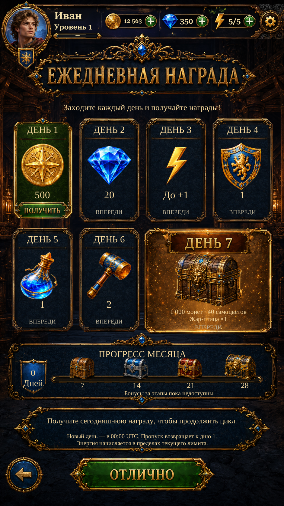

Daily Reward · progress ends R4Daily Reward · progress ends R4
Restored gold end caps on the monthly progress rail. The original left cap is extracted directly; the right cap mirrors it. The separate live fill now tapers inside the complete frame. Existing reward cards, lettering and actions retained.
These are actual Unity captures with isolated test saves. The implemented seven-day schedule and actual saved progress remain authoritative. Monthly milestone bonus payouts remain unavailable and are labelled accordingly.
